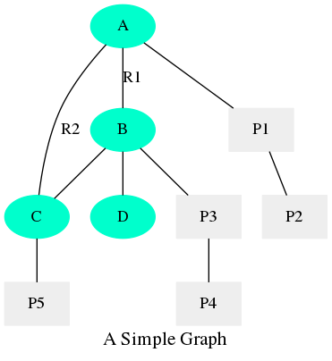
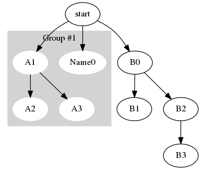

Neo4j 调研笔记
Table of Contents
本文由作者原创，未经允许禁止转载。联系marcnuth(AT)foxmail.com了解转载事宜。
1 Neo4j 简介
Neo4j 是一个图形数据库，可以看作是NoSQL数据库的一种，它将数据存储在图而不是表中。
Neo4j 具备以下一些特性：
- 无需预定义的schema
- 对于高度关联的图形数据，Neo4j的查询速度要比关系型数据库快很多
- 支持ACID的事务操作
Neo4j 的一切都是围绕着 “图形数据库” 出发，因此，Neo4j并不适用于这样一些传统的场景：
- 记录无关联的数据，比如用一张表来记录某种事件，或记录日志
- 存储二进制数据
2 实现原理
2.1 基本数据结构
Neo4j中存在两种基本数据结构，也就是常见构成图的两种元素：
- Nodes（结点）
- Relationships（关系/边）
并且，无论是Nodes还是Relationships，都支持 (key, value) 键值对的属性。
2.2 存储模型


其中，绿色方块表示节点，灰色椭圆表示属性。